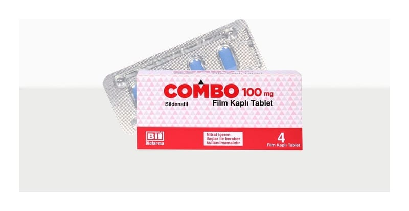

Combo 100 mg Film Kaplı Tablet, 4 Adet

Ne için kullanılır
KT · Bölüm 1 COMBO film kaplı tabletler 100 mg sildenafile eşdeğer 140,45 mg sildenafil sitrat, mavi, bir yüzü çentikli, oblong tablet olarak 4 ve 8 tablet içeren blister ambalajlar halinde sunulmaktadır. COMBO fosfodiesteraz tip 5 inhibitörleri adı verilen bir ilaç grubuna dahildir. Bu ilacı kullanmaya başlamadan önce bu KULLANMA TALİMATINI dikkatlice okuyunuz, çünkü sizin için önemli bilgiler içermektedir.
Bu kullanma talimatını saklayınız. Daha sonra tekrar okumaya ihtiyaç duyabilirsiniz. Eğer ilave sorularınız olursa, lütfen doktorunuza veya eczacınıza danışınız. Bu ilaç kişisel olarak sizin için reçete edilmiştir, başkalarına vermeyiniz. Bu ilacın kullanımı sırasında, doktora veya hastaneye gittiğinizde doktorunuza bu ilacı kullandığınızı söyleyiniz. Bu talimatta yazılanlara aynen uyunuz. İlaç hakkında size önerilen dozun dışında yüksek veya düşük doz kullanmayınız.
Penisteki kan damarlarının gevşemesine yardımcı olarak cinsel uyarı sırasında kanın penise akımını sağlamak suretiyle etki gösterir. COMBO sadece cinsel yoldan uyarılmanız durumunda doğal yolla sertleşme (ereksiyon) oluşmasına yardım eder. Sertleşme sorununuz yoksa COMBO kullanmamalısınız. Sertleşme sorunu, bir erkekte cinsel aktivite için gerekli penis sertleşmesinin sağlanamaması veya sertliğin korunamamasıdır. COMBO kadınların kullanımı için değildir.